专题4.3 多边形和圆的初步认识（举一反三讲义）
【北师大版2024】

【题型1 多边形的概念与分类】 1
【题型2 正多边形的概念辨析】 2
【题型3 多边形截角后的边数问题】 3
【题型4 多边形的周长与面积问题】 4
【题型5 多边形对角线的条数问题】 4
【题型6 对角线分成的三角形个数问题】 5
【题型7 圆的基本概念辨析】 6
【题型8 圆的周长与面积问题】 7
【题型9 圆心角概念辨析及简单运算】 8
 知识点1 多边形及有关概念
知识点1 多边形及有关概念
1. 三角形、四边形、五边形、六边形等都是多边形，它们都是由若干条不在同一直线上的线段首尾顺次相连组成的封闭平面图形．
2. 如下图，在多边形ABCDE中，点A，B，C，D，E是多边形的顶点；线段AB，BC，CD，DE，EA是多边形的边；∠EAB，∠ABC，∠BCD，∠CDE，∠DEA是多边形的内角（可简称为多边形的角）；AC，AD都是连接不相邻两个顶点的线段，像这样的线段叫作多边形的对角线．
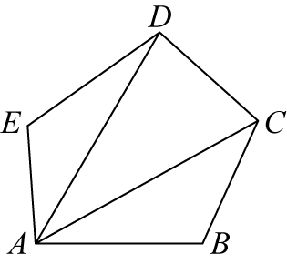
3. 各边相等、各角也相等的多边形叫作正多边形．
【题型1 多边形的概念与分类】
【例1】如图所示的多边形分别是 、 、 、 和 ．

【变式1-1】（24-25七年级下·全国·课后作业）下列图形中不是多边形的是（ ）
A．
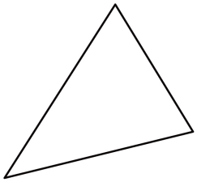
B．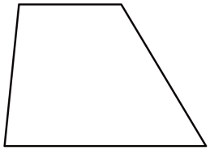
C．
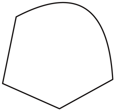
D．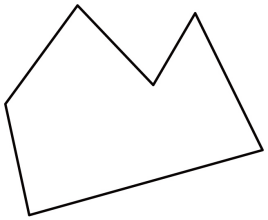
【变式1-2】仔细数一数图中有几个直角三角形，几个正方形，几个长方形．

【变式1-3】把图中的直角三角形和直角梯形相等的边拼合在一起，画出所有拼成的图形．

【题型2 正多边形的概念辨析】
【例2】对于正多边形，下列说法正确的是（ ）
A．正多边形的边都相等，内角都相等；
B．各边相等的多边形是正多边形；
C．各角相等的多边形是正多边形；
D．由正多边形构成的多边形是正多边形；
【变式2-1】下列图形中，是正八边形的是（ ）
A． B．
B．
C． D．
D．
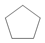
【变式2-2】已知正六边形的周长是36cm，则这个多边形的边长等于 cm．
【变式2-3】下列说法中，正确的个数是（ ）
①等腰三角形是正多边形；
②等边三角形是正多边形；
③长方形是正多边形；
④正方形是正多边形．
A．1 B．2 C．3 D．4
【题型3 多边形截角后的边数问题】
【例3】把一张形状是四边形的纸片剪去其中某一个角，剩下的部分的形状不可能是（ ）
A．三角形 B．四边形 C．五边形 D．六边形
【变式3-1】（24-25七年级上·全国·课后作业）如图，从五边形纸片ABCDE中剪去一个三角形，剩余部分是（ ）

A．四边形 B．五边形 C．六边形 D．以上都有可能
【变式3-2】一个2022边形，减去一个角后，所得多边形的边数为 ．
【变式3-3】如图，四边形ABCD去掉∠C后，剩下的新图形是几边形？请画出图形．
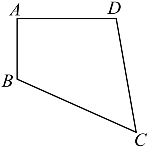
【题型4 多边形的周长与面积问题】
【例4】若一个正n边形的边长为2cm，则其周长为
【变式4-1】如图，小个方格都是边长为1的正方形，图中四边形ABCD的面积为 ．

【变式4-2】如图所示的方格（每个小方格面积为1）中阴影部分为两个轴对称型的汉字，图①中汉字面积为S1，图②中汉字的面积为S2，则S1−S2的值为（ ）

A．1 B．2 C．3 D．6
【变式4-3】（24-25七年级上·河南郑州·开学考试）【图形的剪切】将一个边长是30厘米的正方形，在四个角各剪去一个边长为3厘米的小正方形，那么它的周长与原来相比（ ）
A．减少 B．不变 C．增加 D．无法确定
【题型5 多边形对角线的条数问题】
【例5】（24-25八年级上·青海西宁·期中）一个多边形从一个顶点处可以引出7条对角线，这个多边形的边数是（ ）
A．6 B．7 C．8 D．10
【变式5-1】六边形对角线的条数是 ．
【变式5-2】（24-25八年级上·湖南湘西·期末）过某多边形的一个顶点可以引2024条对角线，则这个多边形的边数是 条
【变式5-3】（24-25七年级下·吉林长春·期中）若一个多边形的对角线条数恰好为边数的3倍，则这个多边形的边数为 ．
【题型6 对角线分成的三角形个数问题】
【例6】（24-25七年级上·山东枣庄·期末）在研究多边形的几何性质时，我们通常把它分割成几个三角形进行研究．从一个多边形的一个顶点引出的所有对角线，把它分割成5个三角形，则这个多边形的边数是 ．
【变式6-1】（24-25六年级下·山东烟台·期中）自八边形一个顶点能引（ ）条对角线，这些对角线可将八边形分成（ ）个三角形．
A．4，5 B．5，6 C．6，7 D．7，8
【变式6-2】探究归纳题：
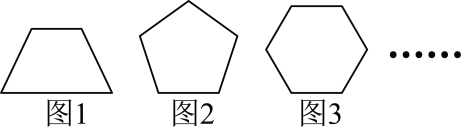
(1)如图1，经过四边形的一个顶点可以作 条对角线，它把四边形分成 个三角形；
(2)如图2，经过五边形的一个顶点可以作 条对角线，它把五边形分成 个三角形；
(3)探索归纳：对于n边形n>3，过一个顶点可以作 条对角线，它把n边形分成 个三角形；（用含n的式子表示）
(4)如果经过多边形的一个顶点可以作100条对角线，那么这个多边形的边数为 ．
【变式6-3】（2025·陕西西安·模拟预测）数学实践课上，小郑将五边形区域分割成若干个三角形，他在五边形内取一定数量的点，连同五边形的5个顶点，逐步连接这些点，保证所有连线不再相交产生新的点，直到五边形内所有区域都变成三角形．如图当五边形内有1个点时，可分得5个三角形；当五边形内有2个点时，可分得7个三角形(不计被分割的三角形)．当五边形内有n个点时，可分得三角形的个数为 ．

知识点2 圆
1. 如下图，平面上，一条线段OA绕着它固定的一个端点O旋转一周，另一个端点A所形成的图形叫作圆．固定的端点O称为圆心，线段OA称为半径．
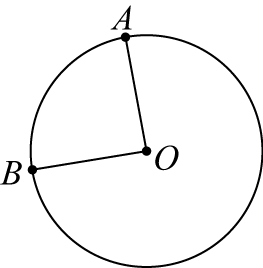
2. 圆上任意两点A，B间的部分叫作圆弧，简称弧，记作AB，读作“圆弧AB”或“弧AB”；由一条弧AB和经过这条弧的端点的两条半径OA，OB所组成的图形叫作扇形；顶点在圆心的角叫作圆心角．
【题型7 圆的基本概念辨析】
【例7】（2025·江苏连云港·二模）一张圆形的纸，要想找到它的圆心，至少要对折（ ）次．
A．1 B．2 C．4 D．8
【变式7-1】下列说法正确的是（ ）
A．圆上任意两点间的部分叫作圆弧
B．圆上任意两点间的线段叫作弧
C．圆上任意两点间的线段长度叫作弧
D．任意两点间的部分叫作弧
【变式7-2】（2025·河北沧州·模拟预测）如图，已知四条弧线AB⏜，CD⏜，EF⏜，GH⏜，点P在其中一条弧线所在的圆上，则点P在（ ）

AB所在的圆上 B．CD所在的圆上
C．EF所在的圆上 D．GH所在的圆上
【变式7-3】（2025·湖南娄底·三模）“转化”是一种重要的解决问题策略，在我们数学学习中经常会运用到．例如探索圆的面积计算公式时，许多同学会将圆形纸片剪成16等份，拼成一个近似的平行四边形（如图①），然后推导出圆的面积计算方法．小亮在研究时，将圆形纸片剪成16等份，拼成一个近似的梯形（如图②）．请仔细观察拼成的这个梯形，梯形的上底与下底的和与梯形的高分别是（ ）

A．圆周长，圆的半径 B．圆周长，圆的直径
C．圆周长的一半，圆的半径 D．圆周长的一半，圆的直径
【题型8 圆的周长与面积问题】
【例8】（25-26八年级上·全国·单元测试）如图，某公园计划砌一个喷水池，有甲、乙两种方案，若外圆的直径相等，水池边沿的宽度和高度一样，你认为砌水池边沿（ ）
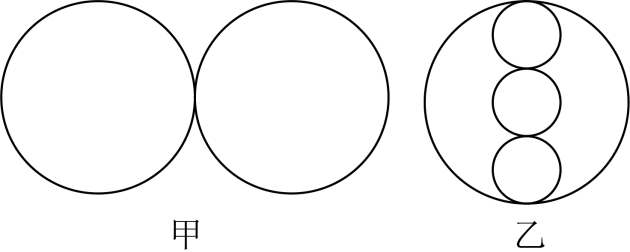
A．甲需要的材料多 B．乙需要的材料多
C．甲、乙需要的材料一样多 D．不确定
【变式8-1】（24-25七年级上·浙江绍兴·开学考试）如图，周长为12.56厘米的圆的面积与长方形的面积相等，则阴影部分的面积与圆面积的比是 ．

【变式8-2】如图两个半径都是4cm的圆外切于点C，一只蚂蚁由点A开始依A、B、C、D、E、F、C、G、A的顺序沿着圆周上的8段长度相等的路径绕行，蚂蚁在这8段路径上不断爬行，直到行走2006πcm后才停下来，则蚂蚁停的那一个点为（ ）

A．D点 B．E点 C．F点 D．G点
【变式8-3】（25-26七年级上·广东揭阳·期中）如图，M、N是表示两个曲边形的面积，那么M、N的大小关系是 ．
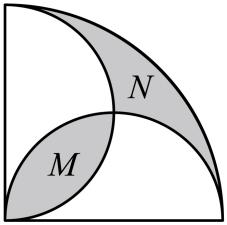
【题型9 圆心角概念辨析及简单运算】
【例9】若将一个圆等分成三个扇形，则其中一个扇形圆心角的度数为 °．
【变式9-1】（24-25九年级上·全国·假期作业）如图所示的圆中，下列各角是圆心角的是（ ）
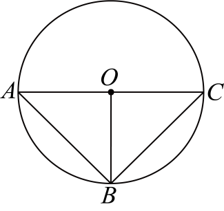
A．∠ABC B．∠AOB C．∠OAB D．∠OCB
【变式9-2】把一个圆分成若干个扇形，若其中一个扇形占整个圆的25，那么这个扇形的圆心角为（ ）
A．144° B．288° C．72° D．36°
【变式9-3】如图，圆心角∠AOD=∠BOC=90°．

(1)判断∠AOC和∠BOD的数量关系，并说明理由；
(2)若∠COD=30°，求∠AOB的度数．